回复@很多的三蒸:交押金给给柜子，电脑可以锁柜子里。创业园按工位算，一个工位每月1000元。 //@很多的三蒸:打听一下，房租管理费等加起来一个月多少？创业园容易丢电脑吗？@Ada李力:最近在创业园坐班，发现真正需要的东西不多，一桌一椅一电脑，外加网络。水杯和一些零碎放在背包里即可。简化了的工作和生活，让人感觉更自在。
都是给赴韩整形中介抬高价和乱收费给闹的。来自中国的用户被收费最高。@环球时报:【韩官方发布最全“整形指导价目表”】韩国保健福祉部27日称，其与大韩整形外科医生会共同调查外国人在韩接受整形手术费用，并在MedicalKorea网站公布相关资料。报道称，该网站提供45项手术的诊疗费、手术所需时间及恢复时间等信息。而在这次诊疗费指南中，外文版本中最先以中文公布。法晚 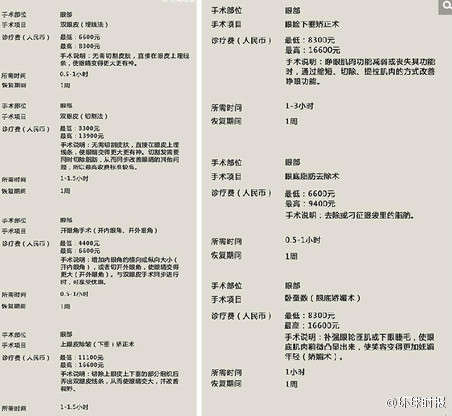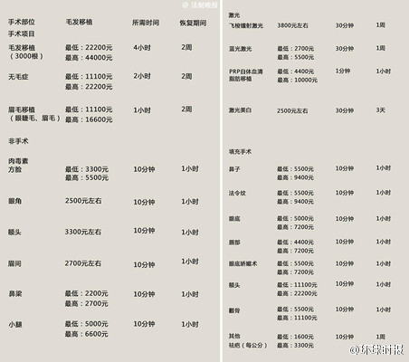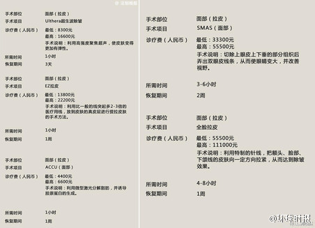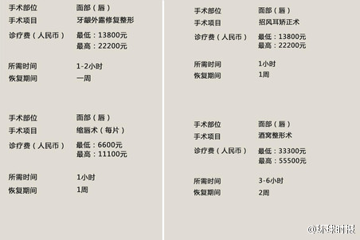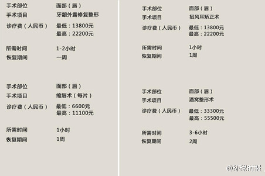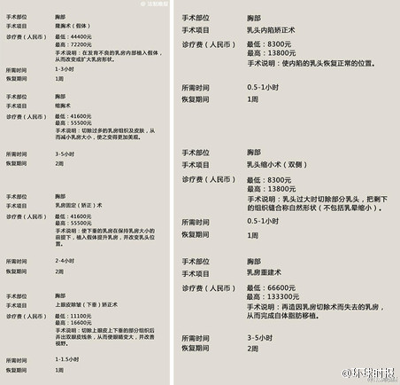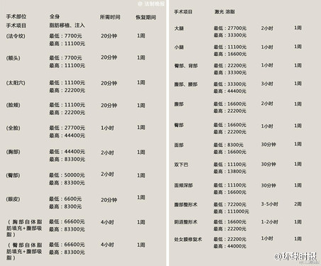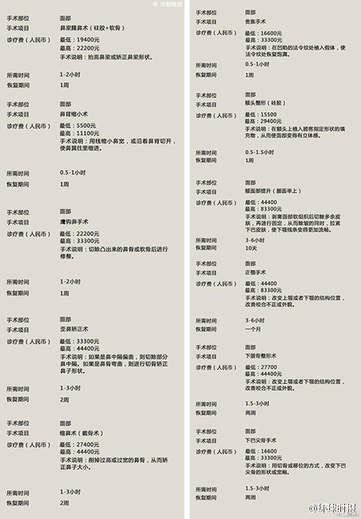
微博上关注的人几乎一边倒地骂@环球时报 主编胡锡进，让我很长一段时间避免这份报纸。不过我关注了环球时报的微博后，发现它在抓社会热点和表达观点时，非常符合大众主流的口味。商业上不就是应该投用户所好么？你的观点跟用户的观点是两码事儿。
回复@juvenxu:我不认为中国会有真正的媒体，所以别期望太拧巴的事情了。 //@juvenxu:媒体和一般商业单位不同，一味讨好用户是不负责任的@Ada李力:微博上关注的人几乎一边倒地骂@环球时报 主编胡锡进，让我很长一段时间避免这份报纸。不过我关注了环球时报的微博后，发现它在抓社会热点和表达观点时，非常符合大众主流的口味。商业上不就是应该投用户所好么？你的观点跟用户的观点是两码事儿。
参考美国和日本，大致可以看出未来十年中国的消费趋势。@华尔街见闻APP:【从大众到个性：日本消费的百年变迁——新消费系列报告二】 收入和人口是消费增长的两大核心驱动力。纵观各国消费史，在受到居民收入水平、人口结构影响的同时，消费水平和结构演进与文化、信贷条件等影响微观主体消费行为因素密切相关。本篇主要探究日本消费的演变历程。详见：从大众到个性：日本消费的百年变迁——新消费系列报告二 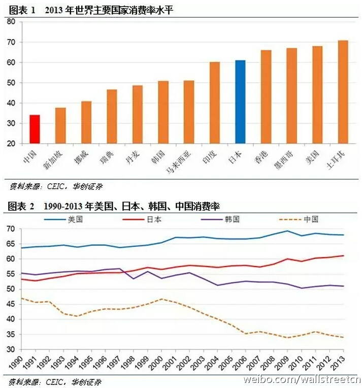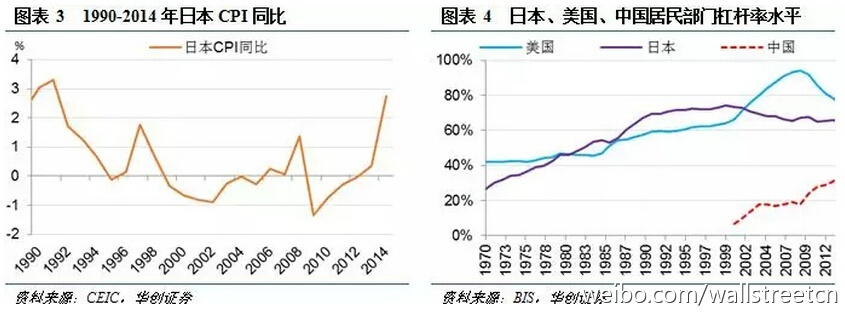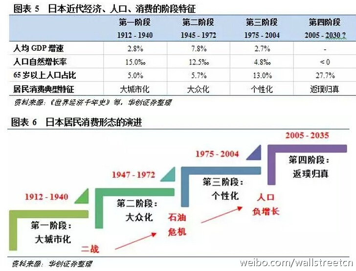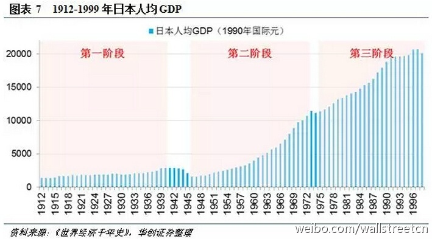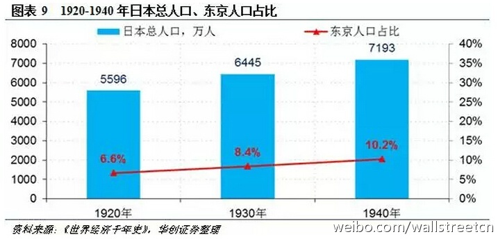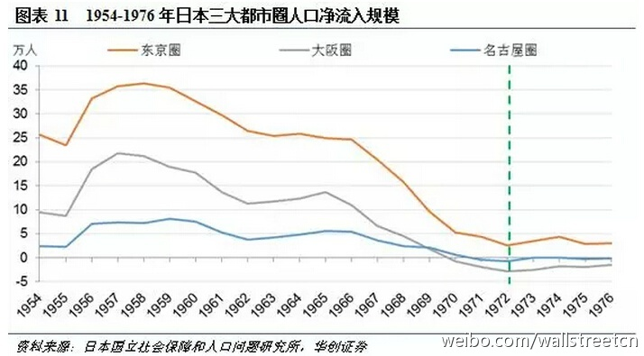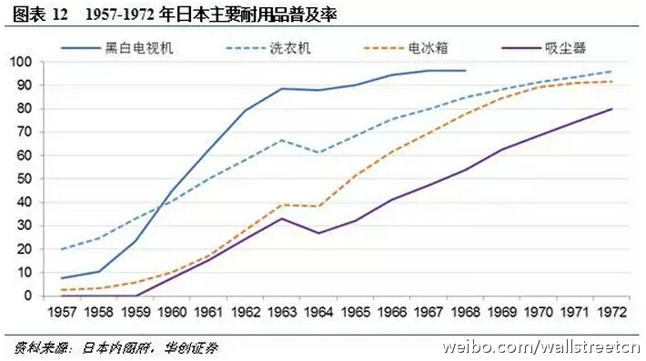